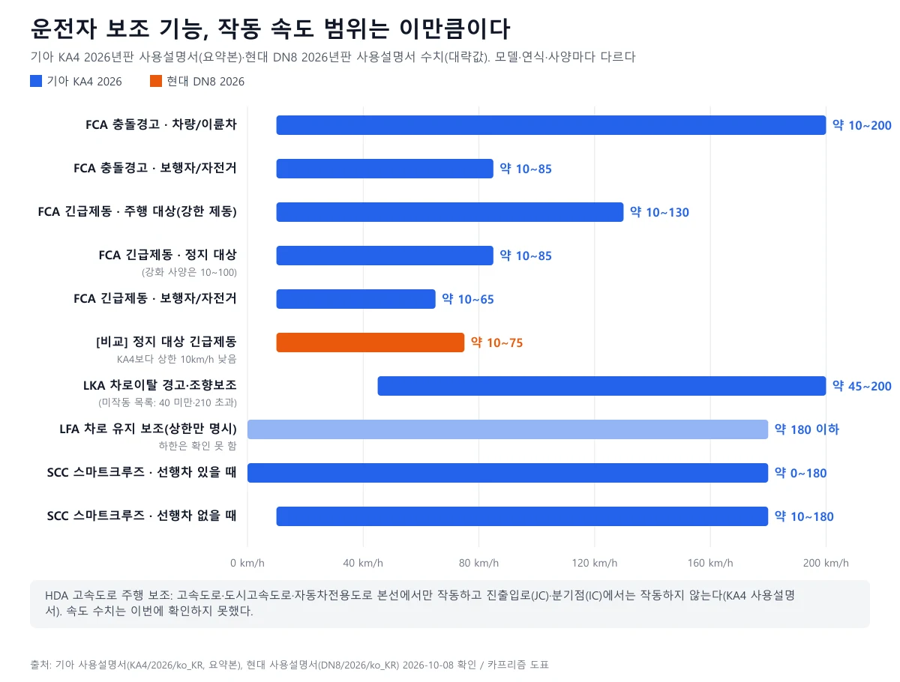
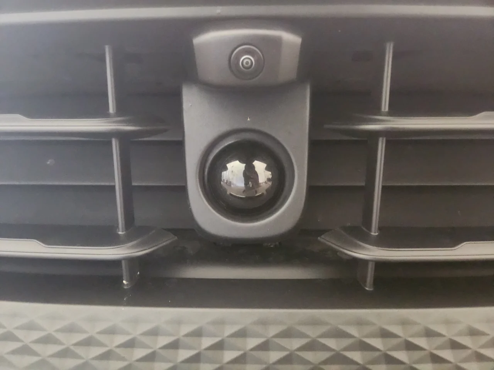
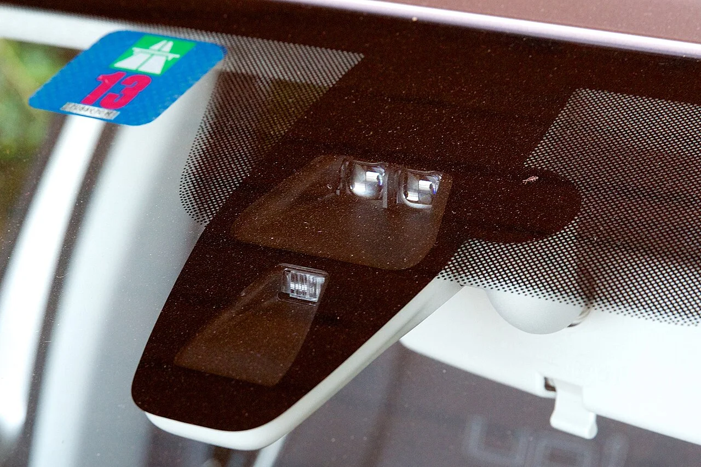
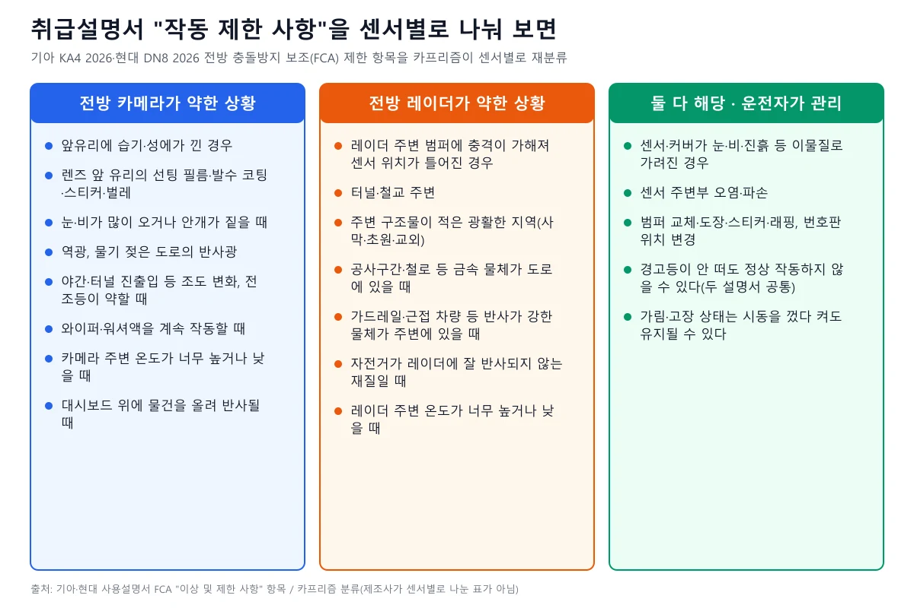
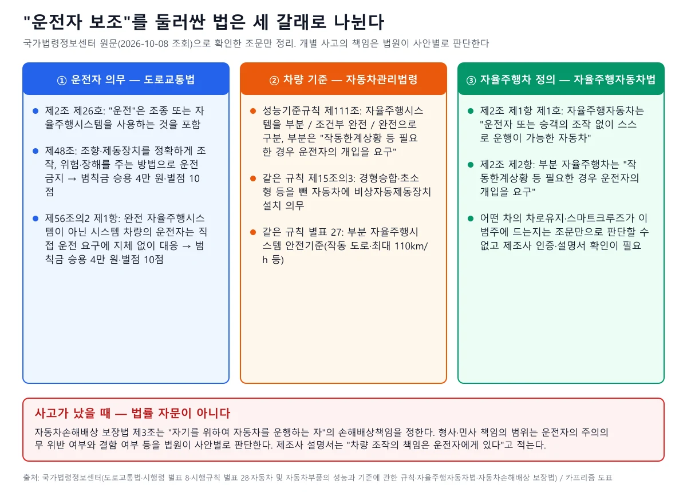
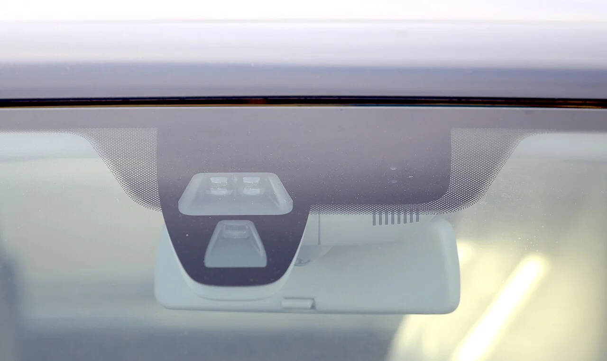

▲ 앞유리 상단에 카메라·센서 하우징이 붙어 있는 차량(위키미디어 파일명 기준 볼보 S60). 차선·앞차·보행자 인식은 대부분 이 위치의 전방 카메라가 맡는다 ⓒ dani31-at, Wikimedia Commons (CC BY 2.0)
"차가 알아서 서겠지", "차선은 차가 잡아주니까". 신차 옵션표에 전방충돌방지·차로유지·스마트크루즈가 기본으로 들어가면서 이런 믿음도 함께 퍼졌다. 그런데 제조사 취급설명서를 직접 열어 보면 숫자가 훨씬 구체적이고 훨씬 좁다. 보행자를 대상으로 한 긴급제동은 약 10~65km/h 구간에서만 작동한다고 적혀 있고, 눈·비·서리가 낀 센서는 경고등 없이도 제 기능을 못 할 수 있다고 적혀 있다. 이 글은 기아(KA4 코드)와 현대(DN8 코드) 2026년판 사용설명서, 국가법령정보센터 조문, 정부·공공 자료로 운전자 보조(ADAS)가 어디까지 해주고 어디서부터 운전자의 몫인지를 확인한 결과다. 차종·연식마다 수치가 다르므로 모두 "대표 사례"이며 내 차에 그대로 적용해서는 안 된다. 확인일은 2026년 10월 8일이고, 법률 자문이 아니다.
1. 이름부터 오해다 — 법령은 'ADAS'도 '레벨 2'도 정의하지 않는다
▲ 앞유리 상단에 카메라·센서 하우징이 붙어 있는 차량(위키미디어 파일명 기준 볼보 S60, 촬영 시점은 파일에 2010으로 표기). 차선·앞차·보행자 인식은 대부분 이 위치의 전방 카메라가 맡는다 ⓒ dani31-at, Wikimedia Commons (CC BY 2.0)
소비자가 말하는 ADAS(첨단 운전자 지원 시스템)나 "레벨 2"라는 단어는 법령 용어가 아니다. 이번에 국가법령정보센터 Open API로 받은 도로교통법·자율주행자동차법·성능기준규칙 조문 원문에서 'ADAS', '운전자 보조', '레벨 2'를 일반 개념으로 정의한 대목은 찾지 못했다. 성능기준규칙에는 조향장치에 한정된 용어인 '운전자지원첨단조향장치(ADASS)'와 비상자동제동장치(제15조의3)·차로이탈경고장치(제14조의2) 같은 개별 장치 조문이 따로 있을 뿐이다. 법이 쓰는 말은 '자율주행시스템'이다. 자율주행자동차법 제2조 제2항은 자율주행차를 둘로 나눈다. 부분 자율주행차는 "제한된 조건에서 자율주행시스템으로 운행할 수 있으나 작동한계상황 등 필요한 경우 운전자의 개입을 요구하는" 차, 완전 자율주행차는 "운전자 또는 승객의 개입이 필요하지 아니한" 차다. 자동차 성능기준규칙 제111조는 이를 부분 / 조건부 완전 / 완전 자율주행시스템 셋으로 다시 나눈다.
그렇다면 내 차의 차로유지·스마트크루즈는 법상 '부분 자율주행시스템'일까. 조문만으로는 알 수 없다. 성능기준규칙 별표 27의 '부분 자율주행시스템 안전기준'은 작동 도로를 "보행자와 자전거 탑승자의 통행이 금지된 도로"이면서 중앙분리대가 있는 도로로 제한하고 최대 작동속도를 110km/h로 묶는다. 일반 도로에서도 켜지는 보조 기능이 이 범주인지는 제조사 인증 자료를 봐야 하는데, 이번에는 확인하지 못했다. 정부 해설은 더 단순하다. 정책브리핑에 실린 자율주행 레벨 설명(새만금개발청 게시, 2022년 4월 20일)은 레벨 2를 "특정 조건에서 시스템이 보조 주행"하는 단계로 소개하고 "운전자는 항상 주변 상황 주시, 적극적으로 주행에 개입"해야 한다고 적었다.
이 글의 조문 확인 범위 도로교통법(시행 2026.7.1), 같은 법 시행령(2026.10.2 시행본)·시행규칙(2026.8.24 시행본), 자동차 및 자동차부품의 성능과 기준에 관한 규칙(2026.7.10 시행본), 자율주행자동차 상용화 촉진 및 지원에 관한 법률(2026.6.18 시행본), 자동차손해배상 보장법을 2026년 10월 8일 국가법령정보센터에서 직접 열어 확인했다. 아래 조문 번호와 금액은 모두 원문 기준이다. 국가법령정보센터 도로교통법 바로가기
2. 긴급제동이 '서는' 속도는 정해져 있다 — 두 설명서 숫자 대조

▲ 2026년판 설명서의 대략적 작동 속도 범위(카프리즘 제작). 막대 끝값은 '약'이 붙은 대략값이며, 모델·사양에 따라 달라진다
전방충돌방지 보조(FCA)는 두 단계로 일한다. 충돌 위험을 판단하면 경고문·경고음·핸들 진동으로 알리고, 그래도 대응이 없으면 제동을 개입한다. 두 설명서의 해당 속도 조건을 나란히 놓으면 다음과 같다.
| 구분 | 기아 KA4 2026 사용설명서(요약본) | 현대 DN8 2026 사용설명서 |
|---|---|---|
| 충돌 경고 · 차량·이륜차 | 10~200km/h | 10~200km/h |
| 충돌 경고 · 보행자·자전거 탑승자 | 10~85km/h | 10~85km/h |
| 긴급제동 · 주행 중인 차량·이륜차(약한 제동) | 10~200km/h | 10~200km/h |
| 긴급제동 · 주행 중인 차량·이륜차(강한 제동) | 10~130km/h | 10~130km/h |
| 긴급제동 · 정지한 차량·이륜차(강한 제동) | 10~85km/h(사양 적용 시 10~100km/h) | 10~75km/h |
| 긴급제동 · 보행자·자전거 탑승자 | 10~65km/h | 10~65km/h |
| 제동 후 정차 유지 | 약 2초 뒤 제동 제어 종료 | 약 2초 뒤 제동 제어 종료 |
숫자를 읽는 방법이 중요하다. 도시 간선도로 제한속도(50~60km/h)에서는 보행자 대상 긴급제동 구간에 들어오지만, 70km/h 안팎의 도로에서 보행자가 튀어나오면 경고만 가능한 구간(65 초과~85km/h)이거나 아예 대상 밖이다. 두 설명서는 모두 "전방 차량 상태 및 주변 환경에 따라 작동 가능한 속도의 범위가 줄어들 수 있다"고 덧붙인다. KA4는 정지 중인 대상에 대해 10~130km/h로 달릴 때도 강한 제동이 작동할 수 있다고 적었지만, 작동이 보장된다는 뜻은 아니다. DN8 설명서는 긴급제동 중 가속 페달을 과하게 밟거나 핸들을 급격하게 조작하면 제동 제어가 해제된다고 적었고, 정차는 약 2초만 유지된 뒤 풀리므로 경고가 뜨면 즉시 브레이크를 밟으라고 안내한다.
참고로 법령에도 최소선이 있다. 성능기준규칙 제15조의3은 경형승합·초소형 등을 뺀 자동차에 비상자동제동장치 설치를 의무로 정하고, 제90조의3과 별표 7의9는 승용차의 이 장치가 작동이 중지되지 않은 상태에서 적어도 차량 대상 10~60km/h, 보행자·자전거 대상 20~60km/h 범위에서 정상 작동해야 한다고 정한다. 설명서의 보행자 약 10~65km/h는 이 최소 범위보다 넓지만, 법령 수치는 시험 기준의 최소선일 뿐 실제 도로에서의 작동을 보장하는 숫자가 아니다. 적용 시점도 부칙으로 나뉘어 보행자·자전거 감지 기능은 새로 개발된 형식이 2025년 1월 1일, 이미 만들어지던 형식은 2027년 1월 1일부터 적용되므로 모든 차에 같은 기준이 쓰이는 것은 아니다.
"안 보이는 사람"은 센서도 못 본다
- KA4 설명서는 보행자·자전거 탑승자의 몸이 가려지거나 눕거나 허리를 굽힌 경우, 키가 작은 경우, 다수가 모여 있는 경우, 주변과 비슷한 색의 옷을 입은 경우를 제한 사항으로 든다.
- KA4·DN8 설명서는 모두 "보행자 및 자전거 탑승자가 끌거나 미는 카트, 자전거, 여행가방, 유모차 등은 인식하지 않습니다"라고 적는다.
- 야간에는 이륜차 인식 성능이 떨어져 기능이 제한되거나 작동하지 않을 수 있다(두 설명서 공통).
- 현대차그룹 공식 저널(2020년 2월 19일 게시)은 FCA가 자동차·보행자·자전거 탑승자 위주로 설계돼 동물·바위·상자 같은 불특정 사물에는 한계가 있다고 설명했다. 2020년 글이라 현재 사양과 다를 수 있다.
3. 차선·크루즈 기능 — 손을 놓으면 어떻게 되나
차로를 지켜 주는 기능은 이름이 비슷해 헷갈린다. KA4 설명서의 구분은 이렇다.
| 기능 | 무엇을 하나 | 속도 조건 | 설명서가 적은 한계 |
|---|---|---|---|
| LKA 차로 이탈방지 보조 | 방향지시등 없이 차로 이탈이 감지되면 경고, 조향 보조 | 약 45~200km/h | 차로 중앙 부근에서는 조향을 돕지 않음. 방향지시등·비상등 직후, 급제동, 급커브 고속 주행, 약 40km/h 미만·약 210km/h 초과에서는 작동하지 않음. 시동·카메라 초기화 시 약 15초 미작동 |
| LFA 차로 유지 보조 | 양쪽 차선 또는 선행 차량을 인식해 차로 중앙 유지 | 약 180km/h 이하 | 핸들을 잡지 않으면 1단계 경고문, 2단계 경고문과 경고음 뒤 자동으로 꺼짐. 차선이 인식되지 않으면 제한적으로 보조 |
| SCC 스마트 크루즈 | 앞차와 거리 유지, 설정 속도 주행 | 선행차 있을 때 약 0~180km/h, 없을 때 약 10~180km/h(설정 30~180km/h) | 정지 차량·매우 느리거나 급감속하는 차량은 인식하지 못할 수 있음. 곡선로·오르막·내리막·고속도로 진출입로에서 가속·감속이 갑자기 일어날 수 있음 |
| HDA 고속도로 주행 보조 | 앞차 거리와 설정속도 유지, 차로 중앙 주행 | 속도 수치 확인 못 함 | 고속도로·도시고속도로·자동차전용도로 본선에서만 작동, 진출입로·분기점에서는 작동하지 않음 |
LKA의 속도 서술은 한 페이지 안에서 두 갈래다. 작동 조건에는 "자차 속도 약 45~200km/h"가 적혀 있고, 작동하지 않는 상황 목록에는 "약 40km/h 미만이거나 약 210km/h 초과"가 적혀 있다. 두 값 사이 경계 구간의 동작은 설명서만으로 확인하지 못했다. 같은 설명서는 "도로 제한속도를 반드시 준수하십시오. 빠른 속도로 주행할 경우 조향을 보조하지 못하여 차량이 차로를 이탈할 수 있습니다"라고도 적었다.
핸들 관련 문구는 모든 차로 기능에서 같다. 장갑을 끼거나 핸들을 약하게 잡으면 "잡지 않은 것으로 판단"해 핸즈오프 경고가 뜰 수 있고, 반대로 "주행 상황에 따라 핸즈오프 경고문이 늦게 표시될 수 있으니 항상 스티어링 휠을 잡고 주행"하라고 한다. 즉 손을 놓아도 되는 시간은 제조사도 정해 주지 않는다. 카프리즘이 앞서 다룬 FSD 우회 영상 기사가 문제 삼은 것도 이 지점, 시스템 이름이 만든 기대와 실제 요구 사이의 간극이었다.
4. 센서는 어디에 있고, 언제 눈이 멀까

▲ 앞 그릴 중앙에 카메라·센서 모듈이 노출된 차량(위키미디어 파일명 기준 포르쉐 마칸). 레이더는 제조사에 따라 범퍼 그릴 뒤나 엠블럼 뒤에 숨어 있어 겉에서는 보이지 않는 경우가 많다 ⓒ SeichanGant, Wikimedia Commons (CC BY-SA 4.0)
KA4 설명서의 FCA 인식 센서 목록은 전방 카메라, 전방 레이더, 전측방 레이더(사양 적용 시), 후측방 레이더(사양 적용 시)다. 스마트 크루즈는 전방 카메라·전방 레이더·전측방 레이더, 차로 유지 보조(LFA)는 전방 카메라 하나만 쓴다고 적혀 있다. 센서 위치는 설명서에 그림으로만 나와 있어 텍스트로는 확인하지 못했다. 일반적으로 카메라는 앞유리 상단 룸미러 뒤, 전방 레이더는 앞 범퍼 중앙부 뒤에 있는 경우가 많지만 이는 모델마다 다르다.

▲ 룸미러 뒤 하우징에 렌즈와 센서 창이 보이는 차량 실내(위키미디어 파일명 'Notbremsassistent', 차종 미상). 앞유리를 가리는 스티커·필름·성에는 이 렌즈의 시야를 직접 막는다 ⓒ Nozilla, Wikimedia Commons (CC BY-SA 3.0)
설명서의 '작동 제한 사항'은 길다. 카프리즘이 이를 센서별로 나눠 보았다(제조사가 센서별로 구분한 표가 아니라 카프리즘의 재분류다).

▲ KA4·DN8 2026 설명서 FCA 제한 항목의 센서별 재분류(카프리즘 제작)
눈여겨볼 문장이 있다. 두 설명서 모두 눈·비 등 이물질이나 안개·폭우로 인식 성능이 떨어지면 기능이 "일시적으로 제한되거나 작동하지 않을 수 있다"며, 이때 경고문이 뜨고 경고등이 켜져도 고장이 아니라 가림이라고 설명한다. 이물질을 제거하면 다시 정상 작동한다. 반대로 "인식 센서 경고문이 표시되지 않거나 경고등이 켜지지 않더라도" 정상 작동하지 않을 수 있고, "가림 및 고장 상태에서 시동을 껐다 다시 걸면 가림 및 고장 상태가 유지"될 수 있다고 한다. 경고등이 없다는 사실이 센서가 멀쩡하다는 증거가 아닌 셈이다. 겨울에 눈여겨볼 항목도 설명서에 따로 있다. KA4 설명서는 LKA가 전방 카메라 렌즈 앞유리나 센서에 눈·비가 묻으면 일시적으로 제한되거나 작동하지 않을 수 있고, 비·눈·먼지 등으로 차로가 잘 보이지 않으면 작동하지 않거나 비정상적으로 작동할 수 있다고 적는다. 스마트 크루즈는 레이더 커버·센서에 눈·비가 묻으면 일시적으로 작동하지 않을 수 있고, '비, 눈, 얼음 등으로 미끄러워진 도로'를 제한 상황으로 든다. DN8의 FCA 제한 항목에도 앞유리 습기·성에, 눈·비가 많이 오거나 안개가 짙을 때, 전방 차량에 눈이 많이 쌓인 경우가 들어 있다. 겨울 앞유리 습기·성에는 김서림 제거 기사, 워셔액 동결은 워셔액 기사, 노면 결빙은 블랙아이스 기사에서 다뤘으니 이 글은 설명서에 적힌 한계 위주로 정리한다.
장착물도 한계에 들어간다 KA4·DN8 설명서는 전방 카메라 렌즈 앞유리에 액세서리·선팅 필름·스티커 등을 붙이지 말고, 앞유리창 가까이 물건이나 구조물을 놓지 말라고 한다(공조 장치 작동 시 습기·성에 제거 성능이 떨어져 운전자 보조 시스템이 작동하지 않을 수 있다). 번호판 위치를 바꾸거나 번호판 몰딩을 붙이면 전방 레이더 성능에 영향이 있을 수 있고, 트레일러·캐리어를 장착하면 성능이 저하되거나 작동하지 않을 수 있다. 스노체인·예비 타이어·규격이 다른 휠을 장착한 경우도 제한 사항에 있다. 기아 KA4 FCA 제한 사항 바로가기 현대 DN8 FCA 제한 사항 바로가기
5. 끄는 방법과 '꺼도 켜지는' 기능
"기능이 오히려 불편하다"며 끄는 운전자가 많다. 끄는 방법은 제조사·모델마다 다르므로 반드시 내 차 설명서의 '설정' 항목을 봐야 한다. KA4 2026 설명서(요약본)가 적은 대표 사례는 다음과 같다.
| 기능 | 끄는 방법 | 설명서의 주의 |
|---|---|---|
| FCA 전방 충돌방지 | 인포테인먼트 설정 → 차량 → 운전자 보조 → 주행 안전 → 전방 안전 해제 | 해제하면 클러스터에 전방 안전 경고등이 켜진다. 시동을 껐다 걸면 자동으로 켜진다 |
| LKA 차로 이탈방지 | 차로 주행 보조 버튼을 길게 누르거나 설정의 '차로 안전' 해제 | 해제하면 조향 도움을 받을 수 없음. 트레일러 견인 시에는 사용하지 말 것 |
| LFA 차로 유지 보조 | 차로 주행 보조 버튼을 다시 누름 | 핸들을 계속 안 잡으면 경고 후 자동으로 꺼짐 |
| SCC 스마트 크루즈 | 주행 보조 버튼을 누르면 꺼짐, 브레이크를 밟거나 스위치를 누르면 일시 해제 | 일시 해제 뒤 재개 스위치를 누르면 이전 설정 속도로 빠르게 가·감속할 수 있으니 확인 후 조작 |
성능기준규칙 별표 27은 자동차로유지기능의 해제 수단이 작동 수단과 같아야 하고, 원동기 시동 사이클이 새로 시작될 때마다 기본 설정은 해제(오프) 상태여야 한다고 정한다. 이는 '부분 자율주행시스템' 기준이라 일반 보조 기능에 그대로 적용된다고 단정할 수는 없지만, 설명서의 "재시동하면 켜진다"는 문구와 같은 방향의 설계 철학이다. 승용차 비상자동제동장치에는 더 직접적인 기준이 있다. 별표 7의9는 기능정지 조종장치로 끈 AEB도 새 시동 사이클마다 정상 작동 상태로 돌아가야 하고, 속도가 10km/h를 넘으면 수동으로 끌 수 없어야 한다고 정한다(제작사가 그런 장치를 설치하는 경우). 설명서의 "재시동하면 켜진다"와 같은 방향이다. 끈 상태로 계속 쓰려는 운전자는 시동마다 다시 꺼야 하고, 경고음을 줄이는 설정은 있어도 경고음 음량을 완전히 끄더라도 작은 소리로 울린다는 설명서 문구도 있다(KA4 경고 방식 항목).
6. 사고가 나면 — 법이 말하는 운전자의 자리

▲ 운전자 보조 관련 법 조문 지도(카프리즘 제작, 국가법령정보센터 원문 확인)
확인한 조문을 순서대로 적는다.
| 조문 | 내용 | 제재(승용 기준) |
|---|---|---|
| 도로교통법 제2조 제26호 | "운전"은 도로에서 차마를 본래의 사용방법에 따라 사용하는 것이며 "조종 또는 자율주행시스템을 사용하는 것을 포함"한다 | — |
| 같은 법 제48조 제1항 | 조향장치·제동장치 등을 정확하게 조작하고, 도로 상황과 차의 성능에 따라 다른 사람에게 위험과 장해를 주는 속도나 방법으로 운전하지 않을 것 | 범칙금 4만 원(시행령 별표 8), 벌점 10점(시행규칙 별표 28) |
| 같은 법 제56조의2 제1항 | 행정안전부령으로 정하는 완전 자율주행시스템에 해당하지 않는 자율주행시스템을 갖춘 자동차의 운전자는 시스템의 직접 운전 요구에 지체 없이 대응해 조향·제동 등 장치를 직접 조작해 운전할 것 | 범칙금 4만 원(시행령 별표 8 제38호의3), 벌점 10점(시행규칙 별표 28) |
| 같은 법 제56조의2 제2항 | 운전자가 자율주행시스템을 사용해 운전하는 경우 제49조 제1항 제10호(휴대전화)·제11호·제11호의2(영상표시장치)를 적용하지 않는다 | — |
| 성능기준규칙 제15조의3 | 경형승합자동차·초소형자동차 등을 제외한 자동차에는 비상자동제동장치를 설치해야 한다 | — |
| 자동차손해배상 보장법 제3조 | 자기를 위하여 자동차를 운행하는 자는 그 운행으로 사람을 사망·부상하게 한 경우 손해를 배상할 책임을 진다(예외 사유 있음) | — |
제56조의2 제2항은 주의해서 읽어야 한다. '운전자 보조'를 켰으니 휴대전화 규정이 풀린다는 뜻이 아니다. 이 항이 면제하는 대상은 법이 정의한 자율주행시스템을 사용하는 경우이고, 같은 조 제1항은 완전 자율주행이 아닌 시스템이라면 운전자가 직접 운전 요구에 즉시 응해야 한다고 정한다. 일반 차로유지·스마트크루즈가 이 '자율주행시스템'에 해당하는지는 이번에 확인하지 못했고, 두 설명서는 모두 "항상 스티어링 휠을 잡고" 주행하라고 한다. 휴대전화·영상 규정은 카프리즘의 운전 중 폰·영상 시청 규정 기사에서 조문별로 정리했다.
현실의 사고 처리는 어떨까. 세계일보가 2026년 9월 27일 보도한 내용은 한국교통안전공단(TS)이 김종양 의원실에 제출한 자료(2021년~2026년 8월)를 근거로 한다. 제작사가 제출한 ADAS 관련 사고 기술분석 36건 중 23건(63.9%)이 '특이사항 없음'으로 종결됐고 리콜 3건, 무상수리 8건이었으며, 리콜·무상수리 11건은 모두 AEB(자동제동) 관련이었다. 외부 기관이 차량 결함을 의심해 분석을 의뢰한 2023년 이후 6건은 공단이 모두 "운전자의 ADAS 과신"으로 확인했다고 밝혔다. 이 수치는 언론이 공단 제출자료를 인용한 보도이며 공단 원문은 확인하지 못했다. 개별 사고에서 누가 얼마나 책임지는지는 결함 여부, 운전자의 주의의무 위반, 도로 상황 등을 법원이 사안별로 따져 정하므로 "ADAS 때문에 책임이 줄어든다/늘어난다"고 단정할 수 없다. 현대차그룹 저널(2020년)도 "아직까지는 사고가 발생하면 그 책임은 운전자에게 있다"고 적었다. 사고 이후 영상 증거 처리는 블랙박스 영상 제출 기사, 과실비율은 과실비율 기사를 참고하면 된다.
7. 범퍼·앞유리·센서를 건드린 뒤에는

▲ 앞유리 안쪽에 고정된 카메라 하우징(위키미디어 파일명 'Brakeassist', 차종 미상). 앞유리를 교체하면 이 카메라가 다시 붙기 때문에 제조사 지침 확인이 필요하다 ⓒ Omar Nordsve, Wikimedia Commons (CC BY-SA 4.0)
두 설명서가 공통으로 적은 경고는 이렇다. "인식 센서를 교체하거나 분리했다가 다시 장착할 때는 자사 직영 서비스센터나 서비스협력사에서 전방 충돌방지 보조 점검을 받으십시오." "인식 센서 및 주변부에 충격이 가해지면 클러스터에 경고등 또는 경고문이 나타나지 않더라도 전방 충돌방지 보조가 정상적으로 작동하지 않을 수 있습니다." 범퍼에 대해서는 더 구체적이다. 전방 레이더 커버와 측후방 레이더가 위치한 범퍼 순정 부품은 품질과 성능이 검증된 부품이고, "임의로 교체하거나 도장, 도색 처리하는 경우 기능이 정상 작동하지 않을 수 있다"는 것이다. 센서 주변에 스티커·몰딩·필름·래핑을 붙이거나 범퍼를 도색하지 말라는 문구도 있다. 세차 때는 부드러운 천을 쓰고 전방 레이더에 고압수를 쏘지 말라고 한다.
앞유리 교체는 어떨까. 두 설명서에서 앞유리 교체 뒤 카메라 보정(캘리브레이션) 절차를 직접 언급한 문구는 찾지 못했다. 제조사 정비 지침은 일반에 공개되지 않는 경우가 많고, 이번 조사에서 국내 제조사·정부 기관의 공식 안내도 확인하지 못했다. 해외 유리 업계 자료에는 앞유리를 바꾸면 카메라 정렬이 달라져 보정이 필요하다는 설명이 많지만 국내 제조사 기준과 같다고 볼 수 없다. 현실적인 방법은 앞유리·범퍼 작업을 맡길 때 "이 차의 전방 카메라·레이더에 제조사가 요구하는 점검·보정 절차가 있는지, 했다면 기록을 남겨 줄 수 있는지" 묻는 것이다. 범퍼 수리비 차이는 카프리즘의 범퍼 수리비 기사에서 다뤘다.
8. 흔한 오해 일곱 가지
| 흔한 말 | 확인한 내용 | 근거 |
|---|---|---|
| "차선 유지가 되니 손은 놓아도 된다" | 핸들을 잡지 않으면 경고 뒤 LFA가 꺼진다. 장갑·약한 파지는 '미파지'로 판단될 수 있고 경고가 늦을 수 있다 | KA4 LKA·LFA 작동 페이지 |
| "앞차에 박을 일은 없다" | 속도 구간이 정해져 있고, 급한 끼어들기·정지 차량·곡선에서 놓칠 수 있다. 제동은 약 2초 뒤 풀린다 | KA4·DN8 FCA 작동·제한 사항 |
| "사람은 다 알아본다" | 누운·굽힌·작은·다수·배경과 유사한 보행자, 카트·유모차는 제한 대상이다 | KA4·DN8 FCA 제한 사항 |
| "경고등이 뜨면 고장이다" | 눈·비·안개 가림은 고장이 아니라 일시 제한이다. 반대로 경고가 없어도 못 쓰는 경우가 있다 | KA4·DN8 인식 센서 가림 항목 |
| "보조 기능을 켰으니 폰을 봐도 된다" | 제56조의2 제2항은 법이 정의한 자율주행시스템 사용 시에만 해당하고, 일반 보조 기능이 거기에 드는지는 확인하지 못했다. 설명서는 항상 핸들을 잡으라고 한다 | 도로교통법 제56조의2, 설명서 |
| "범퍼는 도색해도 센서와 상관없다" | 레이더 커버·센서 주변 범퍼의 교체·도장은 기능 저하 요인이다 | KA4·DN8 FCA 주의 |
| "차종이 달라도 수치는 같다" | 정지 차량 대상 강한 제동 상한이 KA4 약 85km/h, DN8 약 75km/h로 다르다 | KA4·DN8 FCA 작동 페이지 |
9. 출발 전 점검표
설명서가 직접 시킨 일만 추렸다
- 앞유리 카메라 앞(룸미러 뒤 주변)에 블랙박스·스티커·필름·발수 코팅·물건이 시야를 가리지 않는지 본다. 앞유리 가까이 물건을 놓으면 성에·습기 제거가 느려질 수 있다.
- 범퍼 중앙(레이더)과 측후방 센서 부위에 눈·진흙이 쌓이지 않았는지, 세차 때 고압수를 쏘지 않았는지 확인한다.
- 번호판 위치·몰딩, 자전거 캐리어·트레일러, 스노체인·예비 타이어 장착 여부가 기능 제한 사유인지 설명서 '제한 사항'에서 찾아본다.
- 시동을 걸고 약 15초 동안은 일부 기능이 작동하지 않을 수 있다는 점(DN8·KA4 공통 문구)을 기억하고, 클러스터 경고문이 뜨면 무시하지 말고 원인을 확인한다.
- 끄는 방법과 재시동 시 기본 설정(켜짐/꺼짐)을 내 차 설명서로 한 번 확인한다.
- 범퍼·앞유리·센서 수리는 제조사 지침을 묻고 점검·보정 기록을 남긴다.
- 제한속도 준수, 핸들 파지, 전방 주시는 끄고 켜는 설정과 무관하게 운전자 몫이다.
확인하지 못한 것도 분명히 적는다. 첫째, 국토교통부·한국교통안전공단·자동차안전연구원이 직접 낸 ADAS 오인 방지 안내나 앞유리 교체 보정 안내는 찾지 못했다. 둘째, 일반 차로유지·스마트크루즈가 도로교통법상 '자율주행시스템'에 해당하는지에 대한 유권해석은 찾지 못했다. 셋째, 설명서는 모델·연식·사양별로 달라 이 글의 숫자는 기아 KA4 코드 2026년판 요약본과 현대 DN8 코드 2026년판(두 페이지 모두 차종명은 표기돼 있지 않았다. KA4가 기아 K4의 내부 코드명이라는 설명은 검색에서 확인되지만 설명서 페이지가 그렇게 밝히지는 않아 이 글은 코드명으로만 부른다)에 한정된다. 넷째, HDA·LFA의 속도 하한과 센서 위치는 텍스트로 확인하지 못했다.
10. 요약
운전자 보조는 운전을 대신하지 않는다. 기아 KA4(2026)·현대 DN8(2026) 설명서에서 보행자·자전거 대상 긴급제동은 약 10~65km/h, 충돌 경고는 약 10~85km/h 구간이고, 정지 차량 대상 강한 제동은 KA4 약 10~85km/h(사양 시 10~100), DN8 약 10~75km/h로 차종마다 다르다. LKA는 KA4 기준 약 45~200km/h, LFA는 약 180km/h 이하에서 작동하며 핸들을 계속 안 잡으면 LFA가 꺼진다. 카메라는 성에·필름·스티커·역광·안개에, 레이더는 범퍼 충격·터널·철교·금속 구조물에 약하고, 두 설명서는 경고가 없어도 정상 작동하지 않을 수 있다고 적는다.
법은 운전자를 '운전'의 주체로 둔다. 도로교통법 제2조 제26호는 자율주행시스템 사용도 운전에 포함하고, 제56조의2 제1항은 완전 자율주행이 아닌 시스템의 운전자가 직접 운전 요구에 즉시 대응하도록 해 위반 시 범칙금 승용 4만 원·벌점 10점이다. 사고 책임은 법원이 사안별로 판단하며 법률 자문이 아니다. 센서·범퍼·앞유리를 건드린 뒤에는 제조사 점검을 받고, 끄는 방법과 재시동 시 기본 설정은 내 차 설명서로 확인한다. 정부·공공기관의 ADAS 전용 안내와 앞유리 교체 보정 기준은 이번에 확인하지 못했다.